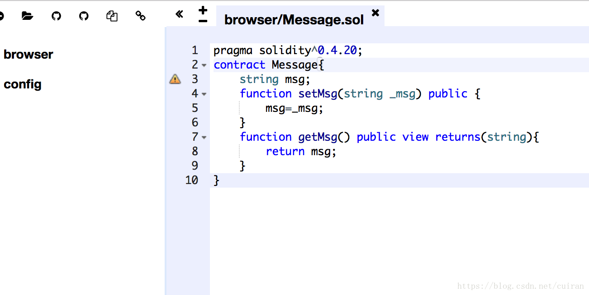
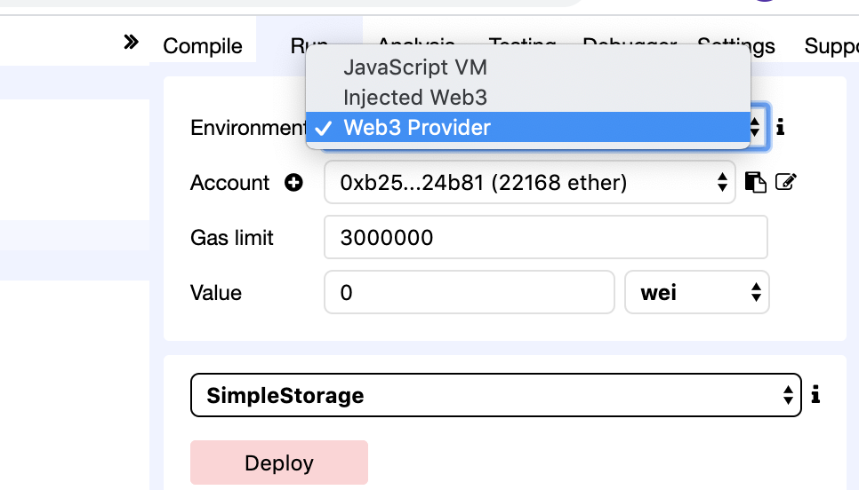
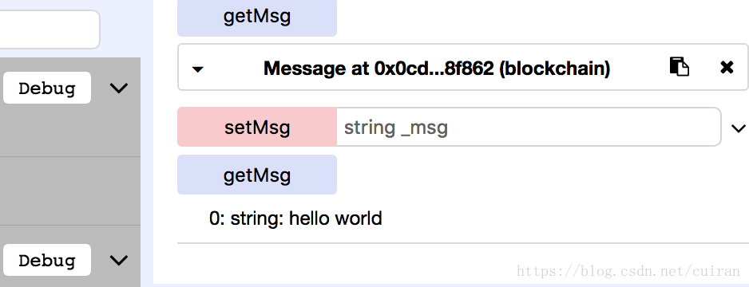

2. 智能合约部署和使用¶
2.1. 介绍¶
Remix是以太坊提供的一个开发Solidity智能合约的网络版开发软件。合约的开发者在Remix里提供的JavaScript虚拟机上开发，调试好合约后，可以发布到以太坊，或者任何支持Solidity智能合约的区块链上。
2.2. 创建合约¶
首先在Remix 新建一个Message.sol
pragma solidity^0.4.20;
contract Message{
string msg;
function setMsg(string _msg) public {
msg=_msg;
}
function getMsg() public view returns(string){
return msg;
}
}

2.3. 部署合约¶

然后进入此前创建的私有链目录
cuiran@cuiran:~/ethereum$ cd data0/
cuiran@cuiran:~/ethereum/data0$ ls
geth history keystore log.txt
cuiran@cuiran:~/ethereum/data0$ geth --datadir . --networkid 4224 --rpc --rpcport 8545 --port 30303 --rpccorsdomain="*" -rpcapi eth,web3,personal,net console 2> log.txt
Welcome to the Geth JavaScript console!
instance: Geth/v1.7.3-stable/darwin-amd64/go1.9.3
coinbase: 0xb258e5b1b30215b112881c13f22ab5a47a624b81
at block: 79 (Mon, 09 Jul 2018 16:20:57 CST)
datadir: /Users/cuiran/ethereum/data0
modules: admin:1.0 debug:1.0 eth:1.0 miner:1.0 net:1.0 personal:1.0 rpc:1.0 txpool:1.0 web3:1.0
> eth.accounts
["0xb258e5b1b30215b112881c13f22ab5a47a624b81", "0xf417953e3b736a68cf7c60f89f459a28d25880da"]
> personal.unlockAccount("0xb258e5b1b30215b112881c13f22ab5a47a624b81");//解锁账号
Unlock account 0xb258e5b1b30215b112881c13f22ab5a47a624b81
Passphrase:
> eth.sendTransaction({from :user1,to:user2,value:web3.toWei(3,"ether")})
"0x92251d069cf4e6f740c5315003819bb021e533e39bcd563eae8cb091363a4e26"
> miner.start();//开始共识
null
> miner.stop();
true
>
然后在remix里面deploy发布 就会出现

在setMsg里面输入 "hello world" 点击getMsg会返回 hello world